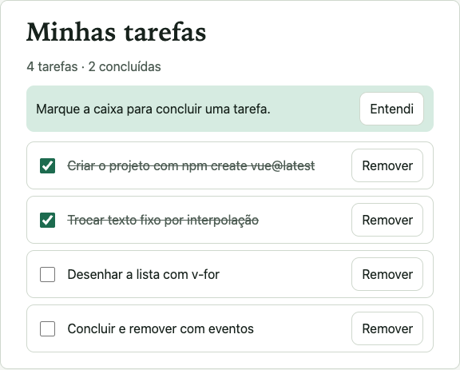
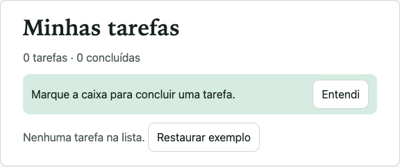

Desafio: a lista vira dados
Os quatro <li> repetidos da etapa 09 viram um array de objetos. O template desenha, decide o que aparece e reage a cliques.
| Critério | Evidência |
|---|---|
| Desenhar a partir do array | Um <li> por tarefa, :key com o id |
| Concluir e remover | Eventos com argumento: remover(tarefa.id) |
Distinguir v-if e v-show | No Elements: elemento ausente × display: none |
<ul> continua existindo no DOM?
Diretivas: repetir, decidir, ligar classes e ouvir eventos
| Diretiva | O que faz | Na Todo List |
|---|---|---|
v-for + :key | Repete o elemento para cada item | v-for="tarefa in tarefas" :key="tarefa.id" |
v-if / v-else | Cria ou destrói o elemento | Lista ou “Nenhuma tarefa” |
v-show | Mostra ou esconde (display: none) | Dica que some com “Entendi” |
:class | Liga classes ao estado | { concluida: tarefa.concluida } |
@evento="f(arg)" | Chama com argumento | @click="remover(tarefa.id)" |
| Modificadores | Ajustam o evento | .prevent, .enter, .once |
const tarefas = ref([
{ id: 1, titulo: '…', concluida: true },
{ id: 2, titulo: '…', concluida: true },
{ id: 3, titulo: '…', concluida: false },
{ id: 4, titulo: '…', concluida: false },
])
function remover(id) {
tarefas.value = tarefas.value
.filter((t) => t.id !== id)
}Do array à tela — e de volta ao estado vazio
<ul v-if="tarefas.length > 0" class="lista">
<li v-for="tarefa in tarefas" :key="tarefa.id"
class="tarefa" :class="{ concluida: tarefa.concluida }">
<label>
<input type="checkbox" :checked="tarefa.concluida"
@change="alternar(tarefa.id)" />
<span>{{ tarefa.titulo }}</span>
</label>
<button @click="remover(tarefa.id)">Remover</button>
</li>
</ul>
<p v-else class="vazio">Nenhuma tarefa na lista. …</p>
Tela real inicial: dica (v-show) e quatro itens (v-for).

Tela real depois de remover as quatro: o v-else assumiu.
No Elements: depois de “Entendi”, o <p class="dica"> continua lá com display: none. Depois de remover tudo, o <ul> some.
ObservePor que remover recebe o id e não a posição na lista?
Prática: “Remover concluídas” e “Concluir todas”
- 1
- “Remover concluídas”: um
filterque fica só com as pendentes. - 2
- “Concluir todas”: um
map; desabilitado (:disabled) quando não houver pendentes. - Evidência
- Os dois botões funcionam; “Concluir todas” fica cinza quando tudo está concluído.
Dica
“Há pendentes?” é uma expressão: tarefas.some((t) => !t.concluida).
Mostrar solução (após a tentativa)
function removerConcluidas() {
tarefas.value = tarefas.value.filter((t) => !t.concluida)
}
function concluirTodas() {
tarefas.value = tarefas.value
.map((t) => ({ ...t, concluida: true }))
}<button @click="removerConcluidas">
Remover concluídas</button>
<button :disabled="!tarefas.some((t) => !t.concluida)"
@click="concluirTodas">Concluir todas</button>Por que a chave é o id, e não a posição
Modelo: o Vue reaproveita elementos. A chave diz qual item é qual. Com a posição, o elemento da posição 0 fica e só troca o texto — o que estava digitado nele “pula” de tarefa.
v-if × v-show
v-if: custo ao alternar (cria e destrói). v-show: custo inicial (sempre desenha). Alternância frequente → v-show.
Investigação: v-if e v-for no mesmo elemento
$ npx eslint src
53:9 error … You should not mix 'v-for' with 'v-if'
vue/no-use-v-if-with-v-forv-if="!tarefa.concluida" no <li> do v-for · arquivo[Vue warn]: Property "tarefa" was accessed during render
but is not defined on instance.
Uncaught TypeError: Cannot read properties of undefined
(reading 'concluida')No Vue 3, o v-if é avaliado antes do v-for: quando ele roda, tarefa ainda não existe.
48:7 error Elements in iteration expect to have
'v-bind:key' directives vue/require-v-for-key:key apagado · arquivoMostrar solução
Para mostrar só pendentes, crie uma lista filtrada (computed, etapa 11) e faça o v-for sobre ela. Para “esconder a lista inteira”, ponha o v-if num elemento de fora (<ul> ou <template>).
Pesquisar: a seção certa da documentação
Recebi este erro de lint num projeto Vue 3: [cole a linha do erro].
Este é o trecho do template: [cole o <ul> e o <li>]. Explique a
causa, mostre a correção com computed e indique a seção da documentação
oficial do Vue que trata disso. Não use Options API.
Verificação sem IA
- 1
- Escreva o
v-forde uma listatarefascom a chave correta. - 2
- Uma dica é escondida e mostrada várias vezes por minuto:
v-ifouv-show? - 3
- Por que
v-ifno mesmo<li>dov-forquebra a página?